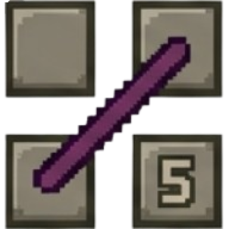

FLOOR 2 · THIS FLOOR'S RULE

German Whispers
Adjacent cells on green lines must differ by 5 or more. Example: 1-7-2-8.
Roll it again · 50 gold
142 → 92 gold · once per market
Market · RM-211 · the floor's rule rolled again for gold (from Floor 2, once per market)